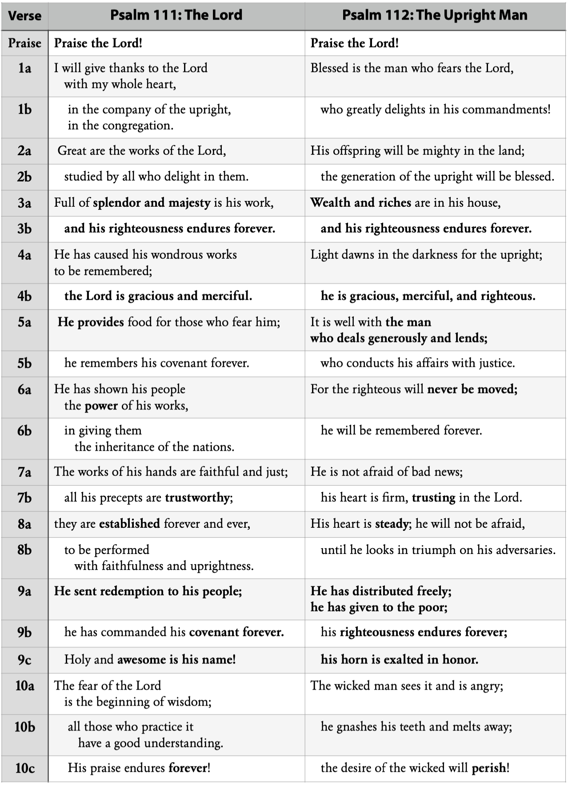
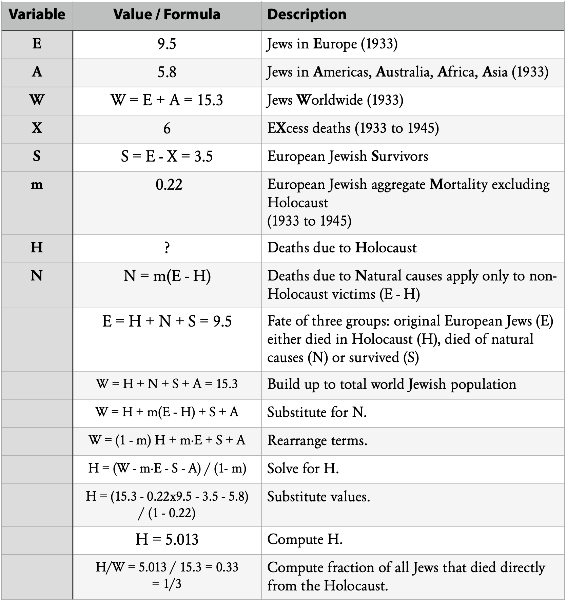

The Acrostic Clock
Psalms 111 and 112
Published on 2024-06-18
Marvelous or marvel-less?
We have been walking through fifty selected psalms that fit into a clock, with each such psalm corresponding to a forty-two year era of history, beginning with the creation and continuing until Christ’s return (or near to it). Our next stop is Psalm 112. It fits the schema but cannot be properly understood without reference to Psalm 111, which is not part of this master Psalm Clock. These two psalms form a clock of their own, an Acrostic Clock. This Acrostic Clock intersects the major psalm clock at Psalm 112:4. That verse maps to the same years in each clock. The extra details brought in from Psalm 111 and from the coarser time structure of the Acrostic Clock confirm the interpretation of verse 4. They also connect us to Psalm 119 and to the Ten Commandments. By these connections, the larger structure of the Psalms becomes clearer and the reasonableness of interpreting the Psalms in this way is supported.
All of what I just said may be true – and still be dull as dishwater. The only reason I dove into Psalm 111 was to find evidence to shore up my theory about Psalm 112. That is not what psalms were made for. They are examples of people meditating on God’s Law. “Open my eyes, that I may behold wondrous things out of your law.” (119:18) I saw useful. I did not see wondrous. This chapter might proceed as originally planned, but now as I write, my heart is searching for wonders.
Psalm 112: 642-684 AD
In our larger Psalm Clock, this psalm maps to the middle of the seventh century.
Light dawns in the darkness for the upright;
he is gracious, merciful, and righteous.
- Psalm 112:4
The reference to darkness reminds us that we are near the start of the Dark Ages, which began in the previous century. The upright person is characterized by three qualities:
- Gracious recalls the declaration from Ephesians 2:8, “For by grace you have been saved through faith.” The Son of God graciously saved us by his blood. We didn’t deserve it.
- Merciful recalls the Father’s words reported by Paul in Romans 9:15: For he says to Moses, “I will have mercy on whom I have mercy, and I will have compassion on whom I have compassion.”
- Righteous is a synonym for holy, so this quality speaks of the Holy Spirit.
Of course these qualities are shared by all members of the Trinity. In this era, the Trinity came under assault. The legions of Islam denied the incarnation and denied the Trinity. They captured Jerusalem and held it for over a millennium, except for two brief periods during the Crusades.
The above connection is weak. Let us bring in Psalm 111 and see what the two together have to say.
Two Interlocking Psalms
Unlike some collections of psalms in the psalter which are non-consecutive, this pair was arranged consecutively so that their connection would be obvious. Both are acrostics. In Hebrew, every line of poetry in these two psalms begins with a different letter of the Hebrew alphabet, in alphabetical order. The first eight verses of each are couplets; the remaining two verses are triplets. This is the first, most obvious structural similarity between the two.
Since Psalm 119 is an acrostic, with each stanza, not verse or poetic line, beginning with a different letter, one might hope there is a connection between all three, and there is. As explored in Peace, Psalm 119 sets the period in years for each tick of the clock at 119 years, which duration also applies to these clocks, excepting the generations of Adam and Methuselah, who lived much longer. So these acrostics likewise use the rigorous sequence of the alphabet to hint at their hidden purpose: to prophesy a precise sequence of historical events.
Another indicator of prophetic content is the identification of these as wisdom psalms. The fingerprint of each of the Seven Spirits of God may be found in the collective verses of these two psalms (though in no particular order):
- Spirit of the Lord. Both Psalms begin with “Praise the Lord” and address the Lord elsewhere.
- Spirit of Wisdom. In Psalm 111:10, we are instructed what is “the beginning of wisdom”.
- Spirit of Understanding. Also in 111:10, we are informed what type of person has “a good understanding”.
- Spirit of Counsel. First, it was the prophets speaking by the Spirit who delivered God’s counsel in the form of prophecy, so by being prophetic these psalms count as counsel. Second, these psalms give examples of counsel given to guide us: precepts (111:7), covenants (111:5,9) and commandments (112:1).
- Spirit of Might. God’s might is displayed in “the power of his works” (111:6) which are “established forever and ever” (111:8), ensuring that “his offspring will be mighty” (112:2) and will “never be moved” (112:6).
- Spirit of Knowledge. The clearest inference that this spirit is present is found in these words: “Great are the works of the Lord, studied by all who delight in them” (111:2). It is in studying God that our knowledge increases. The second inference is from the purpose of that knowledge: to reap an evangelistic harvest. That is the thrust of Matthew, the book most aligned with this spirit. Pursuant to this, we have these words: “He has distributed freely; he has given to the poor; his righteousness endures forever; his horn is exalted in honor.” (112:9)
- Spirit of the Fear of the Lord. The fear of the Lord appears at the conclusion of the first psalm (111:10) and the introduction of the second (112:1). It also shows up in the middle of one (111:5). Beginning, middle, end. This spirit is preeminent.
Before continuing the analysis of these two psalms, it is helpful to line them up side-by-side. In the following table, poetic lines with bolded text either match by exact phrasing, by synonymy, or occasionally by antonymy. Half the phrases have such a match.

The many similarities prove the connection, but the key difference explains its meaning. Psalm 111 speaks of the Lord. Psalm 112 speaks of the upright man. The two psalms taken together teach us that the upright man copies the Lord. God is teacher, model, and father. The one who fears God becomes like Him in righteousness.
With that insight in hand, other truths surface. “Splendor and majesty” of verse 3 is an odd pairing for “wealth and riches”. The only way they can match is for the upright man to value the splendor and majesty of God, which is God’s glory, more than material wealth. Proverbs and Job liken wisdom to gold, silver and rubies. Now we see this in Psalms.
Verse 7 shows another profound connection. In Psalm 111 we see “trustworthy”, but in Psalm 112, “trusting”. The Lord is trustworthy and that inspires in the upright a response of faith, with the man relying on God’s faithfulness, trusting God to keep His promises and maintain His steadfast love.
If we carry uprightness to its extreme, we see that Psalm 111 is about the Father while Psalm 112 is about the Son. Another clue that supports this is in 112:2, “his offspring will be mighty in the land”. Jesus is God’s offspring.
These psalms do more than describe a verse by verse cause and effect. They tell a larger story that spans the two. The hinge is found in the last verse of Psalm 111 and the first verse of Psalm 112. That hinge is the fear of the Lord. Between Father and Son we have the ultimate expression of the Seven Spirits of God. Father, Spirit, Son.
Ecclesiastes ends by extolling the Fear of the Lord. The introductory chapters of Proverbs do the same. Ecclesiastes concerns time and is particularly associated with the Father. Proverbs concerns the planted seed and is particularly associated with the Son; all its teachings are expressed as a Father’s advice to his son. Thus these two psalms mirror Ecclesiastes and Proverbs, respectively.
With all these parallels and the acrostic nature to suggest a methodical sequence of time, the question becomes: how do they define a clock? Twenty-two poetic lines from Psalm 111 plus twenty-two more from Psalm 112 makes a clock of forty-four time periods. The clock based on Psalm 119 had only twenty-two generations, going from Creation to Christ. The clocks based on Job, Matthew’s Chronology and some other Bible passages that run from Creation to Christ’s Second Coming span forty-two generations. Only one solution made sense.
A single clock of forty-two periods may be formed by splicing the two psalms together with two generations of overlap. That overlap includes the two consecutive generations when Jesus was born and was crucified. That overlap is drawn from the verses in each that speak of the Fear of the Lord. Thus Psalm 111 leads us from Creation to Christ and Psalm 112 leads from Christ’s first to his second coming.
The starkest difference between the two psalms supports this conclusion. Psalm 111 says nothing about the wicked. Psalm 112 ends by speaking about how the wicked will perish. That prophesies the events of the tribulation that immediately precedes the Messiah’s return.
The preceding speaks qualitatively about how to relate these psalms to history. Now it is time to get quantitative. In the following, each poetic line corresponds to an era of history. Sometimes the match is looser, in which case a whole verse matches two generations.
Night and Day. One caveat. The correspondences for Psalm 112 (which look forward from the Psalmist’s time) are much stronger than those for Psalm 111, which mostly looks backward. Why? Maybe there is no pattern and no prophetic clock. Or perhaps my skill at finding the connections is poor. If neither of those is true, a third explanation comes to mind, one consistent with the very verse that sent me on this wild goose chase, Psalm 112:4, which begins, “Light dawns in the darkness for the upright…” In the dark of night, little can be seen. Only as dawn approaches do the features of the world become recognizable. Psalm 111 spans the years of darkness. Psalm 112 begins at the rising of the Morning Star.
Behold the light.
Psalm 111, verse by verse.
1st Generation: 4020-3090 BC.
Psalm 111:1a.
Abel.
I will give thanks to the Lord with my whole heart.
This generation is defined by Adam, who lived 930 years. Only two people from the first millennium were commended in Scripture. First was Abel, whose sacrifice God accepted and who became the first martyr. Second was Enoch who “walked with God”. He was born in this generation and in the second generation was carried up to heaven without dying. Those two men loved God wholeheartedly, but which one is best associated with the heart?
The heart is the organ that pumps our blood. The Bible’s first mention of blood is in the story of Cain and Abel. “And the Lord said, ‘What have you done? The voice of your brother's blood is crying to me from the ground.’ ” (Genesis 4:10) Abel is a type of Christ, whose heart burst on the cross, and whose blood also was spilt upon the ground and upon the souls of all who accept his sacrifice in faith.
2nd Generation: 3090-2361 BC.
3rd Generation: 2361-2242 BC.
Psalm 111:1b-2a.
The Flood of Noah.
… in the company of the upright, in the congregation. Great are the works of the Lord…”
Here we have two lines and two generations. The dividing line between the second and third generations is the great flood. Before the flood, generations were long. After the flood, shortened to 120 years, with one year of overlap as with all Generation Clocks.
Great are the Lord’s works! Only three works in history are greater than the flood: the Creation, the New Creation at the end of time, and Christ’s death and Resurrection. This work is distinguished from the Creation, in which no humans actively participated, save Adam, passively as creature, on the sixth day. It is distinguished from the Crucifixion, carried out by the company of the wicked. It is like the New Creation, when the whole “company of the upright” shall be assembled at the time of the Rapture. The story of the flood is the first time a group of people, Noah and his family, cooperated in obedience to God. His family was the first congregation mentioned in Scripture.
4th Generation: 2242-2123 BC.
5th Generation: 2123-2004 BC.
Psalm 111:2b-3a.
Nimrod, Tower of Babel
& Dispersal of the Nations.
… studied by all who delight in them.
Full of splendor and majesty is his work…
If verse 2a declared one of the Lord’s great works, verse 2b tells us with irony that the people of that day failed to study and delight in it. Disobeying God, they built the Tower of Babel and provoked another great work of God: the destruction of the tower, the confusion of the languages and the establishment of the original nations and tribes of humanity.
The word “majesty” is another source of irony. For ages it was common to address kings and queens as “Your Majesty”. It is a title of authority. Nimrod, that mighty hunter before the Lord, established the first empire in human history at this time. He was the first human “majesty”, and he lost that majesty by God’s wrath when his subjects were scattered to the four corners of the earth.
6th Generation: 2004-1885 BC.
Psalm 111:3b.
Abraham.
… and his righteousness endures forever.
Abraham was promised an eternal kingdom founded on righteousness. As Paul said,
“For the promise to Abraham and his offspring
that he would be heir of the world did not come
through the law but through the righteousness of faith.”
- Romans 4:13
What a great promise! To receive such a promise from the lips of God – there can be no greater honor.
“And I will establish my covenant between me and you
and your offspring after you throughout their generations
for an everlasting covenant, to be God to you
and to your offspring after you.”
- Genesis 17:7, ESV
7th Generation: 1885-1766 BC.
Psalm 111:4a.
Job.
He has caused his wondrous works to be remembered…
Nobody knows when Job lived, but based on multiple lines of evidence presented in Job Rises: Thirteen Keys to a Resilient Life, his 210 year lifespan overlapped this era. Looking at this verse, it is good advice for all ages. However, who was the first person to take the initiative to make sure God’s works would be remembered? Who poured out his heart in desperate prayer to the Lord that the story of his faith and struggles not be forgotten but serve as a reminder to all generations that God can even raise the dead?
Oh that my words were written!
Oh that they were inscribed in a book!
Oh that with an iron pen and lead
they were engraved in the rock forever!
For I know that my Redeemer lives,
and at the last he will stand upon the earth.
And after my skin has been thus destroyed,
yet in my flesh I shall see God,
whom I shall see for myself,
and my eyes shall behold, and not another.
My heart faints within me!
- Job 19:23-27
According to tradition, Job is the oldest book in the Bible, composed even before Genesis. It was Job’s prayer that created the Bible, and God’s gracious answer to that prayer that caused all these marvelous truths to be remembered.
8th Generation: 1766-1647 BC.
Psalm 111:4b.
Joseph.
The Lord is gracious and merciful.
The greatest expression of grace (an unmerited blessing) and mercy is the forgiveness of a grievous wrong. There are two ways to identify the first expression of great forgiveness in the Bible: by book and by time. By time, it is Job forgiving his friends, which is fitting since Job’s life overlaps this era. By book, it is Joseph forgiving his brothers for selling him into slavery. Job was personally commanded by God to forgive, so it is Joseph’s forgiveness that is remarkable. The slow softening of his heart is on display in his story. In the end, it was his father’s prayer that tipped the scales. Israel said this to his sons before they went on their second journey to Egypt:
“May God Almighty grant you mercy before the man,
and may he send back your other brother and Benjamin.
And as for me, if I am bereaved of my children,
I am bereaved.”
- Genesis 43:14
The Lord is gracious and merciful.
9th Generation: 1647-1528 BC.
10th Generation: 1528-1409 BC.
Psalm 111:5a-b.
Egyptian Captivity, Moses and Exodus.
He provides food for those who fear him;
he remembers his covenant forever.
Two miraculous provisions of food bookend the story of the Egyptian Captivity. The famine of the 8th generation caused the Hebrew people to enter Egypt in search of food, which was only in abundance because of Joseph’s wise interpretation of Pharaoh’s dream. The Exodus of the 10th generation sent the people into the desert, where Yahweh rained down manna to sustain them. Yet it was during the fearful 9th generation of enslavement that the Jews grew into a multitude. Even in bondage, God provided food.
If one verse proves that this Psalm corresponds, verse by verse, to events of salvation history, it is this one. In this 10th generation, God wrote Ten Commandments upon tablets of stone with His finger. Those Ten Commandments are the covenant spoken of in the phrase “covenant forever”! This psalm and the next each have ten verses. The tenth and final verse of Psalm 112 even speaks of the tenth commandment, defining covetousness as the desires of the wicked. Together, these two psalms represent Christ as the Law, the wisdom of God.
11th Generation: 1409-1290 BC.
12th Generation: 1290-1171 BC.
Psalm 111:6a-b.
Conquest of the Land, Joshua, Judges, Ruth.
He has shown his people the power of his works,
in giving them the inheritance of the nations.
Despite sin and rebellion, the Lord progressively enabled the Israelites to conquer Canaan. He gave them their promised inheritance. From the miraculous crossing of the Jordan to the toppling of Jericho’s walls to the capture of much territory, Joshua led the people faithfully. Then one judge after another reversed incursions by their enemies.
In the second era, the twelfth generation, two widows, Ruth and Naomi, recovered their inheritance. This was due to the righteous and compassionate actions of Naomi’s kinsman- redeemer, Boaz. From lowly widows to an entire nation, God is faithful. No person is too small or insignificant to be noticed by Him.
13th Generation: 1171-1052 BC.
Psalm 111:7a.
Samson.
The works of his hands are faithful and just…
Justice was the responsibility of the Judges. During this era, that fell to Samson. His successes and failures were spectacular. In his case, “the works of his hands” must be taken literally.
Then Samson went down with his father and mother to Timnah,
and they came to the vineyards of Timnah. And behold,
a young lion came toward him roaring.
Then the Spirit of the Lord rushed upon him, and although
he had nothing in his hand, he tore the lion in pieces
as one tears a young goat. But he did not tell his father
or his mother what he had done.
- Judges 14:5-6, ESV
He tore apart a lion with his bare hands and with those same hands toppled the pillars supporting his enemies’ temple, claiming his life and the lives of thousands of Israel’s enemies. In him was found the Spirit of Might. From his example we see that we need God’s might but are lost without God’s wisdom.
14th Generation: 1052-933 BC.
Psalm 111:7b.
David and Solomon.
… all his precepts are trustworthy…
In the ESV, the word “precept” appears twenty-nine times. Twenty-three of those usages are in the Psalms, namely Psalms 19, 111 and 119. We do not know who wrote Psalm 111 (though as an acrostic, likely David), but the other two were written by David. Thus at least twenty-two usages of this word are due to David.
One use can be attributed to Solomon. Hear what he said in Proverbs:
Hear, O sons, a father's instruction,
and be attentive, that you may gain insight,
for I give you good precepts;
do not forsake my teaching.
When I was a son with my father,
tender, the only one in the sight of my mother,
he taught me and said to me,
“Let your heart hold fast my words;
keep my commandments, and live.
Get wisdom; get insight;
do not forget, and do not turn away
from the words of my mouth.”
- Proverbs 4:1-5
David taught Solomon good, trustworthy precepts and Solomon taught them to his sons. What is our generation doing?
15th Generation: 933-814 BC.
16th Generation: 814-695 BC.
Psalm 111:8a-b.
Israel and Judah.
… they are established forever and ever,
to be performed with faithfulness and uprightness.
Will it be the permanence of establishment or the impermanence of destruction? Rehoboam lost half his kingdom in the fifteenth era. The new Kingdom of Israel then fell to Assyria in the sixteenth. At the same time, Elijah was established though persistently hunted by Ahab, and Hezekiah’s life and reign over Judah were extended by God while Sennacherib’s army was slaughtered by a plague.
These erratic arrangements did not appear eternal, but God’s plan is eternal. All He needs is a king on the throne who never wavers from the path of uprightness. Until then, we must settle for an occasional bright light in the midst of darkness, like one of this era’s luminaries, good King Jehoshaphat:
The Lord was with Jehoshaphat, because he walked
in the earlier ways of his father David.
He did not seek the Baals, but sought the
God of his father and walked in his commandments,
and not according to the practices of Israel.
Therefore the Lord established the kingdom in his hand.
And all Judah brought tribute to Jehoshaphat,
and he had great riches and honor. His heart was courageous
in the ways of the Lord. And furthermore, he took
the high places and the Asherim out of Judah.
- 2 Chronicles 17:3-6
17th Generation: 695-576 BC.
18th Generation: 576-457 BC.
19th Generation: 457-338 BC.
Psalm 111:9abc.
Babylonian Exile and Return.
He sent redemption to his people;
he has commanded his covenant forever.
Holy and awesome is his name!
- Psalm 111:9, ESV
The prophet Jeremiah lived during the 17th and 18th generations. He declared that God would establish a new covenant to replace the one that Israel broke:
Behold, the days are coming, declares the Lord,
when I will make a new covenant with the
house of Israel and the house of Judah, not like
the covenant that I made with their fathers
on the day when I took them by the hand to bring them
out of the land of Egypt, my covenant that they broke,
though I was their husband, declares the Lord.
For this is the covenant that I will make with
the house of Israel after those days, declares the Lord:
I will put my law within them, and I will write it
on their hearts. And I will be their God, and they
shall be my people. And no longer shall each one teach
his neighbor and each his brother, saying,
‘Know the Lord,’
for they shall all know me, from the least of them to
the greatest, declares the Lord. For I will forgive
their iniquity, and I will remember their sin no more.”
- Jeremiah 31:31-34
The Lord’s redemption of Israel was strange, accomplished this time not by a judge but by a foreign king named Cyrus. “I am the Lord…”
who says of Cyrus, ‘He is my shepherd,
and he shall fulfill all my purpose’;
saying of Jerusalem, ‘She shall be built,’
and of the temple, ‘Your foundation shall be laid.’”
- Isaiah 44:28
The deliverance in the next generation was equally miraculous, when a Jewish girl named Hadassah was chosen to become Queen Esther. By her courage and tact she delivered the Jews from genocide. How incongruous then that nowhere in her book is found that “holy and awesome” name of God spoken of in verse 9.
20th Generation: 338-219 BC.
21st Generation: 219-100 BC.
22nd Generation: 100 BC-19 AD.
Psalm 111:10abc.
Messiah.
The fear of the Lord is the beginning of wisdom;
all those who practice it have a good understanding.
His praise endures forever!
These fearful days were prophesied by Daniel. In the 20th generation, Alexander the Great arose, whose coming empire was spoken of like this:
Again one having the appearance of a man
touched me and strengthened me. And he said,
“O man greatly loved, fear not, peace be with you;
be strong and of good courage.”
And as he spoke to me, I was strengthened and said,
“Let my lord speak, for you have strengthened me.”
Then he said,
“Do you know why I have come to you? But now
I will return to fight against the prince of Persia;
and when I go out, behold, the prince of Greece will come.
But I will tell you what is inscribed in
the book of truth: there is none who contends
by my side against these except Michael,
your prince.
- Daniel 10:18-21
The angel told Daniel not to fear these visions nor the terrors they announced. Alexander was not to be feared. The Lord was.
The next object of fear was Antiochus IV Epiphanes. In the twenty-first generation, “all those who practice” were subject to persecution, with Sabbath observance banned, the temple desecrated and thousands killed for following God’s laws. The Jews of that time endured a foretaste of the Great Tribulation that will soon come upon the earth.
The third of this final trio of generations, the twenty-second, states that “His praise endures forever”. That indicates the coming of eternal life incarnate, the Messiah, Jesus Christ.
Psalm 111:10 combines three of the Seven Spirits of God: the Sprits of the Fear of the Lord, of Wisdom and of Understanding. It marked a great outpouring of God’s grace, but it was only the beginning. Psalm 112 shall continue the story and take us to the end. But first, a word about a number.
One Nineteen.
Genesis 8:4 recorded the end of the flood of Noah as occurring on the 17th day of the 7th month. 17 x 7 = 119. Psalm 119 added additional justification for believing that 119 years is a special time period. To those passages we can add these two psalms. What do we get if we look at the four poetic lines that start with the seventh and seventeenth letters of the Hebrew alphabet? Let’s look.
He has caused his wondrous works to be remembered…
He sent redemption to his people…
Light dawns in the darkness for the upright…
He has distributed freely; he has given to the poor…
We see a wondrous work of redemption appearing in a time of great darkness that will freely bless the poor. Taken to the extreme, the word “freely” even extends to the Gentiles. Of all those verses, the third (Psalm 112:4a) made the greatest impact on me, because “dawn” and “darkness” are prophetic words that refer to time. I worried that my focus on this verse was subjective. I began to write this section Sunday morning before church on July 23, 2023. When I sat in church, all misgivings vanished. My pastor, Josh Cahan, preached from this text:
For God, who said,
“Let light shine out of darkness,”
has shone in our hearts to give the light of the
knowledge of the glory of God in the face
of Jesus Christ.
- 2 Corinthians 4:6
Since the Holy Spirit saw fit to focus our whole church on the light of Christ, I took that as confirmation that my attention was properly fixed on this parallel verse in Psalm 112. Now may the rest of that psalm shine.
Psalm 112, verse by verse
21st Generation: 219-100 BC.
22nd Generation: 100 BC-19 AD.
Psalm 112:1a-b.
Publication and Incarnation.
… Blessed is the man who fears the Lord,
who greatly delights in his commandments!
The two eras spanned by this verse speak of the twofold incarnation of Christ. In the first era, the Septuagint was completed, and the word of God took a leap towards its final written form. In the second era, the word became flesh when Jesus was born.
Since the Spirit of the Fear of the Lord is the seventh Spirit of God, it signifies completeness. As for the commandments, how could they be complete until the one came who is to command those commands?
To decide if this verse really speaks of Jesus, we could ask some questions. Did Jesus delight in the commandments? Was he blessed by the Father like one who delighted in those commandments? Isaiah had this to say:
Behold my servant, whom I uphold,
my chosen, in whom my soul delights;
I have put my Spirit upon him;
he will bring forth justice to the nations.
- Isaiah 42:1
The greater question is, “Does God the Father delight in Jesus?” That is the proof of everything. That answer is here:
And when Jesus was baptized, immediately he went up
from the water, and behold, the heavens were opened to him,
and he saw the Spirit of God descending like a dove
and coming to rest on him; and behold,
a voice from heaven said,
“This is my beloved Son, with whom I am well pleased.”
- Matthew 3:16-17
23rd Generation: 19-138 AD.
24th Generation: 138-257 AD.
Psalm 112:2a-b.
Crucifixion, Resurrection and Great Commission.
His offspring will be mighty in the land;
the generation of the upright will be blessed.
Two mighty offspring are in view. First is Jesus, the only begotten Son of God. Upon him was the Spirit of Might, a sword to defeat death and Hades. On the cross he exercised the awesome power of God to make atonement for sin and set free all the souls who believe in God.
The second offspring is the church, and Jesus promised to make us mighty in the land:
But you will receive power when the Holy Spirit
has come upon you, and you will be my witnesses in
Jerusalem and in all Judea and Samaria,
and to the end of the earth.
- Acts 1:8
The 24th generation was upright and blessed, but they received this blessing instead:
Blessed are those who are persecuted
for righteousness' sake,
for theirs is the kingdom of heaven.
- Matthew 5:10
25th Generation: 257-376 AD.
26th Generation: 376-495 AD.
Psalm 112:3a-b.
The Plundering of Rome.
Wealth and riches are in his house,
and his righteousness endures forever.
Jesus laid out his plan with simplicity by saying,
“Or how can someone enter a strong man's house
and plunder his goods, unless he first binds
the strong man? Then indeed he may plunder his house.”
- Matthew 12:29
Three of the gospel writers saw fit to include this parable, while John spoke of this event in another way in Revelation. During the 25th generation, the church passed through the worst and final Roman persecution, under Diocletian. Then the Lord bound the strong man and delivered the wealth and riches and power of Rome’s house to his followers. From Constantine’s Edict of Milan in 313 AD to Theodosius’ Edict of Thessalonica in 380 AD, the church’s influence rose until it became the official religion of the empire.
Shall his righteousness endure forever? The 26th generation called this into question. Rome fancied itself as “The Eternal City”. From Alaric’s sack of Rome in 410 AD to its fall in 476 AD at the hands of Odoacer, the mortality of that city became clear. As darkness began to fall upon the continent, God sent a prophet of light. Augustine wrote The City of God to assure the faithful that the heavenly city being built by God would never fall.
27th Generation: 495-614 AD.
28th Generation: 614-733 AD.
Psalm 112:3a-b.
The Dark Ages Begin.
Light dawns in the darkness for the upright;
he is gracious, merciful, and righteous.
We now come to the verse in this two-psalm generational clock whose time period intersects the larger celestial clock that governs the whole of the psalms. In that larger clock, the focus is on the years 642-684 AD, in our 28th generation. If two prophetic clocks with radically different period lengths and numbers of eras assign one verse to the same era in history, it means we should take a closer look.
The 27th generation was the start of the Dark Ages and includes the year 536 AD, the year of darkness. That generation also gave birth to Pope Gregory the Great, considered the best pope of all time by many Orthodox, Protestants and Catholics. He truly was a light in the darkness, for he sent out the Catholic Church’s first large scale mission. They had great success shining the light of the gospel in England. Consider the ramifications of that: Saint Anselm, the Magna Carta, Shakespeare, progress towards democracy, the planting of the American colonies, the spread of the rule of law, Amazing Grace, the abolition of slavery, opposition to Hitler…
The 28th generation saw Jerusalem overrun when a devastating foe arose: Islam. When I see the words gracious, merciful and righteous in Psalm 112:4, I think of the Trinity. I am saved by grace through faith in the Son. My physical needs and miraculous healings are provided by the Father. And the righteousness from God is the Holy Spirit dwelling in my heart.
Not all see this Trinity. The Quran begins in Surah 1 by speaking of God’s mercy, compassion and righteousness. But then in Surah 112, we find these words:
He has never had offspring, nor was He born.
And there is none comparable to Him.
- Surah 112:3-4
Psalm 112 celebrates the birth of God’s Son while Surah 112 denies he exists. That is darkness. By God’s grace, this era ended with the Battle of Tours in 732 AD, when the tide of Islam reached its first high water mark and began to recede.
29th Generation: 733-852 AD.
30th Generation: 852-971 AD.
Psalm 112:5a-b.
Charlemagne.
It is well with the man who deals generously and lends;
who conducts his affairs with justice.
Charlemagne founded the Holy Roman Empire and reformed the justice system. His councilor, Alcuin, wrote a treatise on ethics and personally tutored Charlemagne’s family. Alcuin also created the distinction between primary and secondary education and introduced the use of lower and uppercase letters, making it easier to read. The Carolingian Renaissance was a bright spot in the Dark Ages. Charlemagne gave generously to the church and expended great effort at spreading Christianity throughout his lands. This verse fits him well.
The tenth century saw a movement against fatal judicial punishments. In a hagiography about the martyred King Wenceslas (who in truth was but a prince), Bishop Gumpold of Mantua (prior to 983 AD) proposed a shockingly humane approach to criminal punishment. That is, it would not be shocking to us but it was to a world where blinding someone instead of killing them counted as humane. Justice was advancing, however slowly.
31st Generation: 971-1090 AD.
32nd Generation: 1090-1209 AD.
Psalm 112:6a-b.
First Crusade, Monastic Reforms of Saints Bernard and Francis.
For the righteous will never be moved;
he will be remembered forever.
The 31st generation opened with the Baptism of Rus at Kiev in 988 AD. Christianity exploded into Slavic lands. A thousand years later, despite seventy years of Soviet persecution, the Orthodox Church celebrated a millennium of Christianity in Russia. The righteous will never be moved.
Then in the 32nd generation, with the launching of the First Crusade, Christendom enjoyed a major military victory against the forces of Islam, capturing Jerusalem and holding it for about a century. There are figures from this era that “will be remembered forever” as the psalm says, but how many touch people’s hearts on a regular basis? Only two people from that era are still vital parts of the faith of millions: Saint Francis of Assisi and Bernard of Clairvaux. Bernard left us “O Sacred Head, now Wounded”, one of the most moving hymns ever penned. Saint Francis gave us “All Creatures of Our God and King” and his prayer, “Make me an instrument of your peace”.
Saint Bernard drew up the code of conduct for the Knights Templar, defining the ideals of knighthood. He and the Cistercian Order that he helped spread honored manual labor. Saint Francis kissed lepers and preached compassion for the poor.
Such as these deserve to be remembered forever.
33rd Generation: 1209-1328 AD.
34th Generation: 1328-1447 AD.
Psalm 112:7a-b.
Great Famine, Mongol Invasions,
Black Death, Tamerlane, Ottoman Sieges.
He is not afraid of bad news;
his heart is firm, trusting in the Lord.
This least specific prophecy is the most prophetic. “Bad news” can only be meaningful if it means “the worst news ever”. Consider the contenders for this title. The bowl judgments of Revelation will be the last and worst plagues. This verse cannot mean that for two reasons. First, this verse addresses the upright man, not the wicked inhabitants of the earth. The bad news is for the church, not the infidel. Second, the final verses of this psalm address the fate of the wicked separately.
Another contender is the flood of Noah. This can be ruled out because that is covered by Psalm 111 and again the righteous were spared.
Only the terrors of this age fit because they were a judgment against the church and were comprehensive. Though the thirteenth through the mid-fourteenth centuries did not see the visit of all four horsemen of the apocalypse in their full glory, all four did make an appearance. Those four categories are war, civil war, pestilence and death.
For war, we have attacks by Tamerlane and the Ottoman Empire, but the warrior par excellence was Ghengis Khan. He conquered the second largest empire in history. Considering that the largest, the British Empire, was a Christian empire, that means that Christians of this era faced the greatest non-Christian warlord of all time. That was bad news.
For civil war, the worst period of civil war among Christians was during the wars of religion during the subsequent two eras. The second worst period was during these eras. The Byzantine Empire spent more years engulfed in civil war during these centuries than all its previous history. Also, during the Fourth Crusade in 1204 AD, just five years before the 33rd generation began, western Christians sacked Constantinople. More bad news.
For pestilence, we have the Great Famine of 1315-1317 AD, which killed 10-25% of the population. The Medieval Warm Period ended and the Little Ice Age would soon follow. To take France as an example, famines occurred in 1304, 1305, 1310, 1315–1317 (the Great Famine), 1330–1334, 1349–1351, 1358–1360, 1371, 1374–1375, and 1390, or a fifth of the century. On one occasion, the attendants of King Edward II of England could not find food to feed their king! This famine was exacerbated by cattle disease which killed the draft animals, and pneumonia, bronchitis, and tuberculosis, which killed many people. Very bad news.
For death, we have the Black Death, the worst plague in human history. The worst news.
If you take all this bad news together, it was the worst series of crises ever faced by the church. To compound matters, six years after the end of the 34th generation, Constantinople fell to the Ottoman Empire and the Byzantine Empire was no more. It was one of the greatest blows against Christendom in its history.
This psalm points a finger at exactly when all these crises would hit. It did not tell the church “what” but the psalm told it “when”. The reason the prophecy did not specify “what” was that it meant everything.
If life throws everything at you, will “[your] heart [remain] firm, trusting in the Lord”?
35th Generation: 1447-1566 AD.
36th Generation: 1566-1685 AD.
Psalm 112:8a-b.
Great Famine, Mongol Invasions,
Protestant Reformation, Wars of Religion.
His heart is steady; he will not be afraid,
until he looks in triumph on his adversaries.
In the 35th generation, Luther, Calvin and other Protestants steadied their hearts in the face of great persecution and death.
In the 36th generation, Protestant victories ensured the survival of their creeds, people, churches and influence. They truly looked in triumph on their adversaries, at the cost of tens of millions of lives lost in battle or claimed by war’s disruption.
Throughout this time, they often sang one song as their battle hymn. They sang it on the way to martyrdom. They sang it as they trudged into exile. They sang it when they marched into battle at Leipzig in 1631 and Lutzen in 1632. That song was “A Mighty Fortress is Our God”, by Martin Luther. This verse touches on our current psalm:
And though this world, with devils filled,
should threaten to undo us,
we will not fear, for God has willed
his truth to triumph through us.
The prince of darkness grim,
we tremble not for him;
his rage we can endure,
for lo! his doom is sure;
one little word shall fell him.
37th Generation: 1685-1804 AD.
38th Generation: 1804-1923 AD.
39th Generation: 1923-2042 AD.
Psalm 112:9abc.
Democracy, Abolition of slavery, Rebirth of Israel.
He has distributed freely; he has given to the poor;
his righteousness endures forever;
his horn is exalted in honor.
In the 37th generation, God created the United States of America and intensified the push towards freedom. A new focus on education and other charitable ventures in England, America and elsewhere began to prepare even the poor for a better life. Refugees from poverty and religious persecution now had a haven to which they could flee.
The 38th generation spread aspects of God’s righteousness to the whole world. Chief among them were the abolition of slavery and the push for women’s rights. By the rapid growth of the church and its influence upon all nations, God’s righteousness progressed farther and faster in this generation than any before it.
The 39th generation produced a singular miracle. Out of the ashes of the Holocaust a new Israel arose. What a horrible price was paid. Let’s do the math.
In the following table, population values or changes are in millions of souls. A critical measurement is the excess deaths of Jews from 1933 to 1945. This value of six million is often taken as the number of Jews who died in the Holocaust. It is not. It is the number of Jews who died in the Holocaust plus the children who were never born. They are victims of a horrible sort.
In normal times, a stable population adds births and subtracts deaths. They mostly balance out, with a small percentage gain due to births in a growing population. In such a regime, if the population drops or fails to increase as fast despite additional births, that is called excess deaths and we must try to attribute them to one or more causes, like a pandemic, war or in our case, Genocide. Actual concentration camp records are sufficient to prove that the majority of excess Jewish deaths were directly from the Holocaust. But because of those deaths and the fear of what might happen among Jews that escaped the Holocaust, the birth rate among Jews in Europe plummeted. For the purpose of these calculations, that birth rate will be assumed to be zero.
The upshot of this is that without new births, many of the excess deaths of Jews were from natural causes (or war). Every Jew that did not die in the Holocaust was subject to a “normal” rate of mortality. By separating deaths into two causes, normal and Holocaust, we can divide those six million excess deaths into two groups, then compare those numbers to the total Jewish population to discover what percent of all Jews died from the Holocaust. It is a fraction with eschatological significance of critical importance to the church.
In order to make proper use of excess mortality, we need to know the normal mortality. In 1933, the largest number of Jews in Europe lived in Poland (3 million) and the second most in the USSR (2.5 million). According to this article, “Vital Statistics: An Introduction” [44], the 1930s yearly mortality rate for Jews in Poland was 10.0 ‰ (1%). If extrapolated over the next twelve years, that would be 12%, but fail to account for the stark increase due to the war.
By 1941-2, while the Germans occupied Poland, that rate increased to 20-28%, of which 19% was war deaths and the rest increased mortality due to general hardship brought on by the war. War deaths in the USSR were 14.8%. The numbers for Poland and the USSR were worse than for other nations, so an estimate for the general mortality rate across all European Jews of 22% per this twelve year period seems warranted. One reason is that the early years from 1933-1940, before Poland was invaded, would have had births to counteract the deaths. Let’s see what we can learn from that mortality rate.

Why the math? The result we get after adjusting for natural causes and war deaths is that almost exactly one-third of the worldwide Jewish population died from the Holocaust. This computation is important for three reasons.
First, I do not want to be labeled a Holocaust denier by reducing the tally from six to five million Jewish lives lost. Most of the million difference is civilian deaths due to an evil war provoked by Satan to kill the Jews, so that is still criminal.
Second, the factor of one-third is prophetic. It has to do with trumpets. This verse says “his horn is exalted in honor”. Bulls have horns, so horns are a symbol of strength. Rams have horns, too. The shofar, a trumpet made from a ram’s horn, was significant in Jewish history. When the people marched seven times around Jericho, they blew the shofar and the walls came tumbling down.
Revelation speaks of seven trumpets, too. The seven trumpets blown in that book symbolically represent God marching around the whole world seven times before its walls come tumbling down. In Peace, I attempted to match the first five trumpet judgments to events in history. It only works if you swap the chronological order of trumpets four and five. This swapping of the fourth and fifth items in a series of seven has precedent. In Job 3, his lament is a Decreation myth. Job inverts the good things of creation with the bad things of his life, like darkness for light and death for life. Day four was when the sun, moon, and stars were made. Day five included the creation of the sea creatures. Job mentions but one sea creature: Leviathan, the terrifying sea serpent. By reordering things thus, Job was saying that Leviathan comes before the Morning Star. Jesus is the Morning Star and Satan rules over Leviathan. Job was really saying that the devil would get to him before the savior. Help would arrive too late.
How does this tie in with Revelation’s fourth trumpet? That judgment announces a great persecution:
The fourth angel blew his trumpet,
and a third of the sun was struck,
and a third of the moon,
and a third of the stars,
so that a third of their light might be darkened,
and a third of the day might be kept from shining,
and likewise a third of the night.
- Revelation 8:12
By striking the sun, moon, and stars, what is happening is that the numbers of Christians will be drastically reduced and the church’s influence – its light – would wane significantly. That has not happened yet, but the effects of the fifth trumpet have, as explained in Peace. Thus the two trumpets – as they concern the church – were reversed.
Not so for Israel. These prophecies of the end times apply to both Israel and the church, but at different times and in different ways. For Israel, the order of the trumpets remains unaltered. The church has experienced trumpets one, two, three, and five and awaits the fourth trumpet, which will be blown early in “a time to hate”, near when the fifth seal is opened, which speaks of the same persecution but in a different way, in terms of lives lost, not influence diminished.
Israel has already experienced the first five trumpets in sequence. The precise fraction of one-third of all Jews that perished during the Holocaust matches the fraction that was relentlessly repeated in Revelation 8:12. John the Apostle accurately prophesied this event over 1,800 years before it happened as it pertained to the Jews, whom he loves.
The punchline for this second reason that the factor of one-third is important is God’s hedge. God put a hedge around Job. Satan was limited in what he could do to the man, as horrible as it was. God also placed a limit upon Satan for the Holocaust. Satan’s agent, Hitler, was permitted to kill no more than a third of the world’s Jews. God predicted it, promised it and kept that promise.
Third, we have a grave reason. Surely the same will happen to the Lord’s beloved church. When the great persecution begins, likely later in this century, Christians will be tempted to despair that all believers will be killed. However, we have God’s word that as terrible as it is, only one third will die. The cost will be calamitous but God will preserve a remnant. This raises a question.
What is the church doing to prepare the flock so that we may remain faithful, no matter what comes?
What is the church doing
to prepare the flock
so that we may remain faithful,
no matter what comes?
40th Generation: 2042-2161 AD.
41st Generation: 2161-2280 AD.
42nd Generation: 2280 AD-Eternity.
Psalm 112:10abc.
Great Persecution, Final Judgement.
The wicked man sees it and is angry;
he gnashes his teeth and melts away;
the desire of the wicked will perish!
The three lines of the final verse of Psalm 112 match the final three of Solomon’s times: a time to hate, a time for war and a time for peace. We can see the hatred in the wicked man’s anger in the first line, 112:10a. We see the warfare when he gnashes his teeth in the second line, Psalm 112:10b. Finally, we see the cause of peace in 112:10c. When the wicked perish and are consigned to Hell, there will be peace.
The first era of this verse is the one soon to begin. It will usher in a terrible persecution. Millions of Jews will flee the Americas for Israel. Most Christians will have nowhere to flee. We need the rest of the verse to give us hope and sustain our faith. When the clock that is these two psalms runs out, it will be for the wicked, not the righteous.
What is “the desire of the wicked”? It is covetousness. The tenth and final commandment forbids this sin. It seems to the ignorant that this final commandment is the least of the sins described. Murder. Theft. Adultery. Perjury. They look pretty bad. However, they all spring from the same evil seed, which is covetousness, the desire for what is not yours. By this last verse we see the strongest connection between these two psalms and the Law. Throughout all generations, God upholds his law.
Now it is time to return to the larger Psalm Clock. We shall resume with Psalm 115.
(NOTE: This analysis of the Psalms continues in the chapter "The Final Ascent: Psalms 113-150" in Plague, Precept, Prophet, Peace.)